원자력기사 (2016-09-04 기출문제)
1과목: 원자력기초
1. 핵반응에 대한 보존법칙과 관련 없는 것은?
- 핵자 수 보존
- 전하량 보존
- 운동량 보존
- 운동에너지 보존
(정답률: 알수없음)

2. 결합에너지에 대한 정의로 맞는 것은?
- 핵을 양자와 중성자로 분리시키는데 필요한 에너지
- 핵자들을 서로 완전히 분리시키는데 필요한 에너지
- 핵분열 반응을 일으키기 위해 외부에서 가해주어야 하는 최소한의 에너지
- 양자와 중성자를 결합시켜 하나의 핵을 만드는데 필요한 에너지
(정답률: 알수없음)
3.
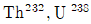
등이 열중성자에 의해 핵분열이 일어나기 어려운 이유로 맞는 것은?- 중성자 흡수단면적이 작기 때문
- 중성자 산란단면적이 크기 때문
- 핵적으로 안정하기 때문
- 중성자 결합에너지가 임계에너지보다 작기 때문
(정답률: 알수없음)
4. 핵연료 온도가 증가할 경우에 대한 설명 중 틀린 것은?
- 공명흡수 구간이 넓어진다.
- 공명흡수 첨두치가 커진다.
- 공명흡수되는 중성자의 수가 많아진다.
- 공명이탈확률이 작아진다.
(정답률: 알수없음)
5. 핵연료 연소에 따른 변화에 대한 설명 중 옳은 것은?
- 노심 내 반응도는 증가한다.
- 거시적 분열단면적은 시간에 따라 감소한다.
- 일정한 출력을 유지하기 위해서는 중성자속이 일정해야 한다.
- 시간이 지남에 따라 주기초보다 축방향 중성자속 분포의 굴곡이 커진다.
(정답률: 알수없음)
6. 지발중성자에 대한 설명 중 틀린 것은?
- 원자로 정지 시 생성도 중지된다.
- 분열 생성물에서 방출된다.
- 대략 KeV 영역의 에너지를 가진다.
- 원자로 제어에 중요한 역할을 한다.
(정답률: 알수없음)
7. 원자로 주기(Period)가 5초인 원자로의 출력을 1KW부터 높이기 시작하였다. 30초 후 원자로 출력은 약 얼마인가?
- 285 KW
- 318 KW
- 403 KW
- 472 KW
(정답률: 알수없음)
8. 원자로 내에서 독물질을 사용하면 증배계수가 감소하게 되는 주된 원인은 무엇인가?
- 중성자 생성계수의 감소
- 공명이탈확률의 감소
- 열중성자 이용률 감소
- 속분열인자의 감소
(정답률: 알수없음)
9. 다음 중 경수형 원자로의 노심 주기길이와 관련이 없는 것은?
- 냉각재 내 붕소농도
- 제어봉의 반응도 값
- 가연성 독물질
- 핵연료 농축도
(정답률: 알수없음)
10. 원자로 내 한 지점에서 다음과 같은 자료를 가진다. 이 지점에서 단위체적, 단위시간 당 핵분열 반응의 수는? (단, 중성자 밀도 109/cm3, 거시적 분열단면적(∑f)는 0.1㎝-1, 중성자 속도 V는 2,200m/sec)
- 1.2×1012/cm2ㆍsec
- 2.2×1020/cm2ㆍsec
- 1.2×1013/cm2ㆍsec
- 2.2×1013/cm2ㆍsec
(정답률: 알수없음)
11. 잉여반응도는 원자로를 임계상태로 유지하기 위해 필요한 양 이상으로 장전된 반응도를 의미한다. 이러한 잉여반응도를 장전하는 이유 중 틀린 것은?
- 제논과 같은 독물질 생성
- 핵연료 연소
- 플루토늄의 생성
- 출력결손
(정답률: 알수없음)
12. 다음 중 분열반응 및 원자로 열출력에 대한 설명으로 틀린 것은?
- 중성미자가 원자로 열출력에 기여하는 부분은 거의 없다.
- 핵분열반응을 통해 생성하는 에너지의 약 80%는 중성자의 운동에너지이다.
- 핵분열 반응은 중성자의 핵분열이 가능한 핵연료와의 흡수반응 중의 하나이다.
- 한 번의 핵분열 반응을 통해 얻을 수 있는 에너지는 약 200MeV이다.
(정답률: 알수없음)
13. 무한 원자로의 중성자 증배계수를 KINF=εㆍPㆍfㆍη로 표현할 수 있는데 이 식에 대한 다음 설명 중 틀린 것은?
- P는 공명이탈확률로서 핵연료의 온도가 높아지면 중성자의 공명이탈확률이 작아지므로 증배계수를 감소시킨다.
- ε는 속핵분열에 의해 생겨난 중성자 수를 열핵분열에 의해 생겨난 중성자 수로 나눈 값이다.
- f는 열중성자 이용률로서 핵연료 물질에 흡수되는 열중성자수를 원자로 물질에 흡수되는 총 열중성자수로 나눈 값이다.
- η는 핵연료에 하나의 중성자가 흡수될 때마다 핵분열에 의해 새로이 생성되는 중성자 수이다.
(정답률: 알수없음)
14. 반감기가 5.2년인 Co60 1mg의 1년 후의 방사능은?
- 0.5 Ci
- 1 Ci
- 1.5 Ci
- 2 Ci
(정답률: 알수없음)
15. 다음 중 즉발중성자만으로도 핵분열에 사용된 중성자보다 많은 중성자가 생성되며 중성자수가 급격히 증가하여 제어가 불가능한 상태를 나타내는 반응도로서 맞는 것은?
- K ＞ 1 + 1.5β
- K ＞ 1 + 0.5β
- K ＞ 1 + 1β
- K = 1 + 0.5β
(정답률: 알수없음)
16. 감속재가 갖추어야 할 조건으로 맞는 것은?
- 중성자에 대한 평균 대수에너지 감쇄가 작아야 한다.
- 중성자 흡수단면적이 커야 한다.
- 중성자 산란단면적이 커야 한다.
- 비중이 높아야 한다.
(정답률: 알수없음)
17. 가연성 독물질을 장전하는 주요 목적과 거리가 먼 것은?
- 초기노심 장전 시 잉여반응도 보상
- 원자로 정지여유도 확보
- 반경방향 중성자속 분포 조정
- 감속재 온도게수를 부(-)로 유지
(정답률: 알수없음)
18. 균질 탄소 매질 내에서 중성자 산란 평균 자유행정(λs)는 얼마인가? (단, 탄소의 미시적 산란단면적(σs)는 4.8b, 밀도는 1.6g/cm3이다.)
- 0.3cm
- 1.5cm
- 2.6cm
- 3cm
(정답률: 알수없음)
19. 증식이득이 0.15인 고속증식로에U238, Pu239을 장전하여 전출력으로 운전할 때 Pu239는 매일 2kg씩 소모된다. Pu239의 장전량이 500kg이라고 할 때, Pu239의 생성률은?
- 0.15 kg/day
- 0.3 kg/day
- 5 kg/day
- 75 kg/day
(정답률: 알수없음)
20. 가압경수로(PWR)와 가압중수로(PHWR)의 특성에 대한 다음 설명 중 틀린 것은?
- 두 원자로 모두 열중성자로이다.
- 도 원자로 모두 우라늄을 연료로 사용한다.
- 두 원자로 모두 비균질로이다.
- 냉각재로 경수(H2O)와 중수(D2O)를 노심특성에 맞게 혼합하여 사용한다.
(정답률: 알수없음)
2과목: 핵재료공학 및 핵연료관리
21. 다음에서 설명하는 부식의 종류는?
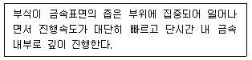
- 점식(Pitting)
- 입계부식
- 응력부식균열(SCC)
- 마모부식
(정답률: 알수없음)
22. 가압경수로 1차 계통 선량율을 저감하고 구조재료의 균열 발생을 억제할 목적으로 냉각재 내에 주입하는 것은?
- Li
- Zn
- B
- Fe
(정답률: 알수없음)
23.
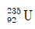
가 최종적으로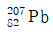
로 붕괴할 때까지 일어나는 알파붕괴와 베타붕괴 수의 짝으로 맞는 것은? (단, 이 계열은 4n + 3계열이다.)- 7, 3
- 7, 4
- 8, 3
- 8, 4
(정답률: 알수없음)
24. 핵연료 주기가 순서대로 나열한 것은?
- 채광 – 성형 – 농축 – 변환 – 정련
- 정련 – 변환 – 채광 – 성형 – 농축
- 채광 – 정련 – 변환 – 농축 – 성형
- 변환 – 농축 – 채광 – 성형 – 정련
(정답률: 알수없음)
25. 경수로 사용후연료아 비교하여 동일 질량의 중수로 사용후핵연료가 가지는 특성을 바르게 설명한 것은?
- 붕괴열이 크다.
- Pu의 질량이 더 많다.
- U235의 질량이 더 작다.
- 연소도가 높다.
(정답률: 알수없음)
26. 다음에서 설명하는 재처리 방법은?
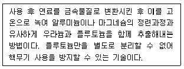
- 원심분리법
- 퓨렉스
- 용매추출법
- 파이로프로세스
(정답률: 알수없음)
27. 사용후연료 중간 저장방식에 대한 설명 중 틀린 것은?
- 습식저장은 사용후연료를 임시저장조에 저장하는 원리와 같다.
- 습식저장은 2차 폐기물이 발생하지 않는다는 장점이 있다.
- 건식저장은 물 대신 기체 또는 공기를 냉각재로 사용한다.
- 건식저장은 안전과 비용측면에서 습식저장방식에 비해 유리하다.
(정답률: 알수없음)
28. 피복재를 포함하여 연료가 갖추어야 할 조건으로 틀린 것은?
- 제조비용이 저렴해야 한다.
- 운전 및 정지에 따른 반복적인 열하중을 견디어야 한다.
- 냉각재에 대한 부식 저항성이 높아야 한다.
- 중성자 흡수 단면적이 높은 물질이어야 한다.
(정답률: 알수없음)
29. 초기에 Cs137만 1Ci 존재하였다면 60.14년 뒤 Ba137m의 방사능은? (단, Cs137(반감기 : 30.07년)은 Ba137m(반감기 2.55분)으로 붕괴한다.)
- 0.125 Ci
- 0.25 Ci
- 0.5 Ci
- 1 Ci
(정답률: 알수없음)
30. 정격출력 1,400MWe, 열효율 35%, 가동율 97%, 운전시간 12개월, 총 우라늄 장전량 120톤인 원자로 핵연료의 평균 연소도(MWD/MTU)는?
- 약 10,400 MWD/MTU
- 약 11,800 MWD/MTU
- 약 12,400 MWD/MTU
- 약 14,800 MWD/MTU
(정답률: 알수없음)
31. 다음 우라늄 농축방법에 대한 설명 중 맞는 것은?
- 원심분리법은 분리계수가 크기 때문에 캐스케이드의 소요단수가 작아도 된다.
- 화학교환법은 UF6기체를 쓰지 않고 우라늄 용액을 쓰기 때문에 장치가 복잡하다.
- 노즐법은 분리계수가 작고 복잡한 장치를 필요로 하는 단점이 있다.
- 기체확산법은 전력소모량이 적고 소량의 냉각수만 필요로 하는 장점이 있다.
(정답률: 알수없음)
32. 원자력발전소의 기체 방사성폐기물 관리에 대한 설명 중 맞는 것은?
- 기체 방사성폐기물은 주로 이온교환, 막분리에 의해 이루어진다.
- 원전의 공기조화계통 공기정화기(ACU)는 주로 건물 내 공기를 배기하는데 사용된다.
- 원전 격납건물 배기는 연속배출 방식으로 배출된다.
- 기체 방사성폐기물은 크게 입자, 요오드 불활성기체, CRUD로 나눌 수 있다.
(정답률: 알수없음)
33. 방사성폐기물 처분시설에 설치하는 공학적 방벽이 갖추어야 할 요건으로 틀린 것은?
- 폐기물을 물리적으로 고립시킨다.
- 물의 방벽 안으로 침투를 줄인다.
- 방출 핵종은 흡착, 지연 등으로 이동속도를 줄인다.
- 열전도도를 낮춰서 열을 최대한 보전한다.
(정답률: 알수없음)
34. 다음 중 핵연료를 설명한 내용이 틀린 것은?
- 금속우라늄의 특징은 융점이 낮고, 상변태가 일어나 고온에서 운전하는 상업용 원자로에서는 사용되지 않는다.
- 금속우라늄은 결정의 이방성을 가지고 있다.
- 이산화우라늄은 융점이 높고 고온에서 비교적 안정성이 높다.
- 이산화우라늄은 열전도도가 금속우라늄보다 크다.
(정답률: 알수없음)
35. 핵연료 피복재가 갖추어야 할 조건으로 틀린 것은?
- 중성자 흡수 단면적이 적을 것
- 고온에서 기계적 강도가 높을 것
- 핵연료와의 화학 반응성이 높을 것
- 냉각재에 대한 부식 저항성이 좋을 것
(정답률: 알수없음)
36. 중성자 조사로 인해 나타날 수 있는 현상에 대한 설명 중 틀린 것은?
- 재료의 인장강도가 감소한다.
- 원자 공공과 침입형을 발생시킨다.
- 지르코늄 핵연료 피복재에서 조사성장을 유발한다.
- 전위루프와 석출물을 발생시킨다.
(정답률: 알수없음)
37. 핵연료봉의 손상유무 및 손상정도를 판별할 수 있는 핵종으로 틀린 것은?
- I
- Kr
- Xe
- Cs
(정답률: 알수없음)
38. 사용후연료 중간저장시설의 구조 및 설비에 대한 기준 중 틀린 것은?
- 중간저장시설은 가능한 한 능동형 설비를 이용하여 사용후연료를 안전하게 저장할 수 있도록 설계해야 한다.
- 중간저장시설은 필요시 저장된 사용 후 연료를 안전하게 회수할 수 있어야 한다.
- 중간저장시설은 미임계 유지를 위해 고정식 중성자 흡수체를 사용할 수 있다.
- 중간저장시설에는 가능한 한 비가연성 재료를 사용해야 한다.
(정답률: 알수없음)
39. 방사성폐기물 처분에 대한 설명이 올바른 것은?
- 처분시설 안전성평가에서 가장 중요한 사항은 처분시설 운영 중 배출되는 방사성 물질에 의한 안전성 평가이다.
- 현행 1단계 월성 중저준위 처분시설(사일로)에 처분할 수 있는 고형화 방식은 시멘트, 폴리머, 파라핀 고형화이다.
- 처분시설이 위치하는 지역은 지하매질에서의 수리전도도가 작아야 한다.
- 처분시설의 인수기준은 규제기관이 설정한다.
(정답률: 알수없음)
40. 펠렛-피복재 상호작용(PCI)이 고연소도 피복재에서 발생확률이 높은 이유는?
- 피복재의 연성이 더 증가하였기 때문
- 펠렛-피복재 사이의 간극이 초기에 비해 줄어들었기 때문
- 수소화물의 생성량이 줄어들었기 때문
- 피복재에 걸리는 인장응력이 감소하기 때문
(정답률: 알수없음)
3과목: 발전로계통공학
41. Dittus Boelter 상관식을 이용하여 원형관 내부에서 가장 가열되는 유체 유동에 대한 열전달 계산 시 필요한 무차원 수를 바르게 연결한 것은?
- 레이놀즈 수 : 프란들 수
- 레이놀즈 수 : 프라우드 수
- 비오트 수 : 프란들 수
- 비오트 수 : 프라우드 수
(정답률: 알수없음)
42. 벤츄리 튜브를 사용하여 원자력발전소의 주급수 유량을 측정할 때 필요한 인자가 아닌 것은?
- 압력 차
- 유체점도
- 유체 밀도
- 유동면적 비
(정답률: 알수없음)
43. 핵연료봉 내의 펠렛에 대한 다음 설명 중 틀린 것은?
- 정상운전 중 기체상태의 핵분열 생성물을 잡아두기 위하여 약간의 기공이 존재하도록 제작한다.
- 열전도도를 향상시키기 위하여 펠렛과 피복재 사이의 공간을 헬륨기체로 가압한다.
- 펠렛 양단면은 중앙부의 열팽창을 수용하기 위하여 접시모양으로 파여있다.
- 펠렛 상하부에는 열전달률이 높은 스테인레스강 재질의 스페이서 펠렛이 삽입된다.
(정답률: 알수없음)
44. 원자력발전소의 2차 계통을 구성하는 랭킨 사이클의 핵심기기들을 유체흐름에 따라 바르게 나열한 것은?
- 증기발생기 → 터빈 → 펌프 → 복수기
- 펌프 → 증기발생기 → 터빈 → 복수기
- 펌프 → 복수기 → 터빈 → 증기발생기
- 증기발생기 → 펌프 → 복수기 → 터빈
(정답률: 알수없음)
45. 원자력발전소의 2차 계통에 대한 T-S선도의 열효율 계산식을 옳게 나타낸 것은? (단, hn은 아래 그림의 (n)에서의 엔탈피이다.)
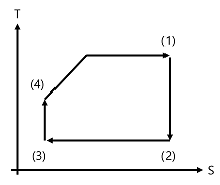
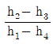
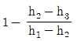
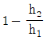
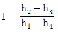
(정답률: 알수없음)
46. 내경이 0.3m인 관 내부를 흐르는 유체의 레이놀즈 수(Re)가 300,000일 때 평균 속도는? (단, 유체의 밀도와 절대 점성계수는 각각 1,00kg/m3, 10-3Nㆍs/m2이다.)
- 1 m/s
- 3 m/s
- 10 m/s
- 30 m/s
(정답률: 알수없음)
47. 화학 및 체적제어게통에 대한 설명으로 바른 것은?
- 핵분열생성물 중 냉각재계통으로 누설된 불활성 기체를 제거한다.
- 출력제어를 위하여 냉각재의 붕산농도를 높인다.
- 충전 및 유출유량을 조절하여 가압기 수위를 제어함으로서 냉각재의 양을 유지한다.
- LOCA시 저압 안전주입계통에 붕소가 함유된 냉각수를 공급한다.
(정답률: 알수없음)
48. 노심보호연산기(CPC)의 기능에 대한 설명으로 틀린 것은?
- 원자로 정지신호 발생
- 제어봉집합체 인출 금지신호 발생
- 비상노심냉각수 공급신호
- 제어봉집합체 위치지시
(정답률: 알수없음)
49. 다음 중 원자력발전소의 Alloy-600 증기발생기 튜브에서 발생하는 손상형태가 아닌 것은?
- 덴팅
- 마모손상
- 중성자 조사취화
- 응력부식균열
(정답률: 알수없음)
50. 한국 표준형 원전의 정지냉각계통 기능에 대한 설명으로 틀린 것은?
- 설계기준 사고 후 원자로건물의 내부온도 및 압력을 감소시킨다.
- 주증기관 파단이나 LOCA 후에 다른 열제거 기기들과 연계되어 원자로를 냉각시킨다.
- 연료재장전 기간 중 연료 재장전수를 충수하거나 배수하는 기능을 수행한다.
- 냉각재계통의 감압운전 시 화학 및 체적제어계통과 연계되어 냉각재 정화기능을 수행한다.
(정답률: 알수없음)
51. 정부는 후쿠시마 원전 사고에서 나타난 문제점을 기반으로 국내 ℃전에 대해 종합 안전점검을 수행하여 개선대책을 도출하였다. 다음 중 도출된 개선대책이 아닌 것은?
- 이동형 발전차량 및 축전지 등 확보
- 지진 원자로자동정지계통 설치
- 원자로 비상냉각수 외부 주입유로 설치
- 안전관련 기기의 주기적인 시험 수행
(정답률: 알수없음)
52. 한국 표준형 원전의 화재진압계통에 대한 설명 중 틀린 것은?
- 화재진압계통의 배관손상으로 인하여 1차 및 2차 소방능력이 동시에 저하되지 않도록 설계한다.
- 단일고장 개념이 화재진압계통 설계에 반영된다.
- 화재진압계통의 부주의한 작동 시 안전에 중요한 구조물, 계통 및 기기에 미치는 영향이 최소화되도록 설계된다.
- 내진범주 I등급 화재진압계통과 내진범주가 아닌 화재진압계통은 격리되어 개별적으로 운영되도록 설계된다.
(정답률: 알수없음)
53. 50W의 전열기로 0.8ℓ의 물을 15℃에서 100℃까지 가열하는 20분이 소요되었다면 손실된 열량은 몇 %인가? (단, 1KW = 860Kcal/hr이고 물의 비열은 1Kcal/kgㆍ℃이다.)
- 52%
- 52.5%
- 55%
- 57.5%
(정답률: 알수없음)
54. 서로 다른 열전도율을 가지는 4개의 물질로 구성된 파형 구조에서 열전달이 발생하여 그림과 같은 온도분포를 나타내었다. 열전도율이 가장 낮은 물질은?
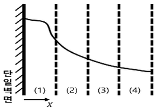
- (1)
- (2)
- (3)
- (4)
(정답률: 알수없음)
55. 다음 중 원자로 노심에서 이루어지는 열전달 형태는?
- 포화 핵비등
- 과냉 핵비등
- 부분 막비등
- 막비등
(정답률: 알수없음)
56. 다음 중 PWR형 냉각재계통의 기능이 아닌 것은?
- 핵분열 생성물의 수용 및 붕괴열 제거
- 감속재, 반사체 및 붕소의 운반체 역할
- 열충격 방지 및 노심의 반응도 변화 억제
- 연료에서 발생한 열에너지를 증기발생기로 전달
(정답률: 알수없음)
57. 다음 가압경수로형 원자력발전소의 가압기에 관한 설명 중 틀린 것은?
- 정상운전 중 냉각재계통의 압력을 일정하게 유지한다.
- 정상운전 중 가압기 상부에 설치된 안전밸브를 개방하여 가압기 압력을 일정하게 유지한다.
- 냉각재계통 압력 과동상태에서 압력변동을 최소화한다.
- 가압기 상부에 설치된 분무밸브가 열리면 가압기 압력이 감소한다.
(정답률: 알수없음)
58. 다음 중 APR-1400형 원자력발전소의 설계특징이 아닌 것은?
- 저압 안전주입 펌프 설치
- 안전주입탱크 유량조절기 설치
- 원자로건물 내 재장전수 저장탱크 설치
- 원자로용기 직접 주입방법 도입
(정답률: 알수없음)
59. 정상운전 중 핵종분석을 통해 핵연료의 손상을 진단할 때 손상된 핵연료의 연소도를 알 수 있는 가장 효과적인 방법은?
- Xe1133 및 Kr87의 측정
- Cs134, Cs137의 비율 측정
- I131, I133의 비율 측정
- Sr89 측정
(정답률: 알수없음)
60. 다음 중 원자로 용기(Reactor Vessel)의 기능이 아닌 것은?
- 출력 생산영역 제공
- 냉각재계통 압력경계 형성
- 물리적 방벽 형성
- 냉각재 하중 전달
(정답률: 알수없음)
4과목: 원자로 안전과 운전
61. 어떤 원자로의 감속재 온도계수 αMT=1.5×10-4△K/K/℃이다. 이 원자로의 감속재 온도가 15℃ 떨어졌을 때 투입된 반응도는 얼마인가?
- 0.01×10-4△K/K
- -0.01×10-4△K/K
- 2.25×10-3△K/K
- -2.25×10-3
(정답률: 알수없음)
62. 유효증배계수가 1.002일 때 반응도는?
- 0.00199
- 0.0199
- 50.251
- 502.51
(정답률: 알수없음)
63. 원자로 출력이 99% 유지되고 있다면 원자로는 다음 중 어느 상태로 운전되고 있는가?
- 초임계
- 임계
- 미임계
- 알 수 없음
(정답률: 알수없음)
64. 다음에서 가압경수로형 원자력발전소의 대형냉각재상실사고(LBLOCA)의 진행순서를 바르게 나열한 것은?
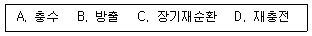
- A → B → C → D
- B → A → D → C
- C → B → A → D
- D → C → B → A
(정답률: 알수없음)
65. 가압경수로형 원자력발전소가 100% 출력운전 중 냉각재 펌프가 정지되어 원자로가 정지되었다. 이 때 이루어지는 자연순환 냉각조건과 가장 거리가 먼 것은?
- 열 생성원
- 열 제거원
- 열 제거원은 열 생성원보다 높은 곳에 위치
- 열 제거원 용량 ≤ 열 생성원 용량
(정답률: 알수없음)
66. 가압경수로형 원전의 과도상태 중 증기발생기 내에서는 수위의 수축과 팽창이 일어날 수 있다. 이 중 수축의 원인으로 적절한 것은?
- 터빈출력의 급격한 증발
- 증기발생기 주증기 안전밸브의 개방
- 터빈 정지밸브의 닫힘
- 증기우회밸브(혹은 증기덤프밸브)의 개방
(정답률: 알수없음)
67. 가압경수로형 원전의 증기발생기 튜브파열사고 발생 시 증상이 아닌 것은?
- 격납건물 방사선량 증가
- 손상된 증기발생기의 증기유량과 급수유량 불일치
- 복수기 배기 기체 방사선량 증가
- 원자로 냉각재 압력감소
(정답률: 알수없음)
68. 초기출력 18KW에서 7분 후 1.8MW로 되려면 얼마의 기동율을 주어야 하는가?
- 0.18DPM
- 0.21DPM
- 0.25DPM
- 0.28DPM
(정답률: 알수없음)
69. 중대사고에 관한 설명으로 틀린 것은?
- 설계기준사고를 초과하여 노심손상을 야기하는 사고
- 노심용융 사고를 통칭함
- 다중사고에 의해 발생하며 발생확률이 매우 낮음
- 공학적 안전설비의 설계기준으로 설정되는 가상사고
(정답률: 알수없음)
70. 핵비등 이탈률(DNBR)에 영향을 미치는 인자가 아닌 것은?
- 냉각재 온도 및 압력
- 냉각재 유량
- 증기발생기 수위 및 압력
- 원자로 출력
(정답률: 알수없음)
71. 가압경수로형 원전에서 정(+)반응도 삽입효과를 주는 사고가 아닌 것은?
- 붕산 희석
- 제어봉 인출
- 주증기관 파단
- 주급수 펌프 정지
(정답률: 알수없음)
72. 가압경수로형 원자력발전소에서 주증기 배관파열로 증기 과잉방출사고(ESDE)발생 시 나타나는 증상이 아닌 것은?
- RCS 과냉각 여유도 증가
- RCS 평균온도 감소
- 사고 SG 증기유량 증가
- 가압기 수위 증가
(정답률: 알수없음)
73. 다음 중 가압경수로형 원자력발전소의 설계기준 사고가 아닌 것은?
- LOCA
- SGTR
- ESDE
- 급수 완전상실사고
(정답률: 알수없음)
74. 다음 가압경수로형 원자로 출력운전 중 축방향 중성자속 분포에 영향을 주는 인자에서 가장 거리가 먼 것은?
- 원자로 출력준위
- 제어봉 위치
- 연료 연소
- 냉각재 붕소농도
(정답률: 알수없음)
75. 가압경수로형 원자력발전소에 설치된 안전주입계통의 기능이라 볼 수 없는 것은?
- LOCA시 노심냉각을 위해 RCS에 붕산수를 공급
- LOCA시 원자로 건물 과압을 방지
- LOCA 후 장기 노심냉각수단을 제공
- 충분한 정지여유도를 제공
(정답률: 알수없음)
76. 다음 중 가압경수로형 원자력발전소의 증기발생기 튜브 손상원인으로 가장 거리가 먼 것은?
- 결정입계부식
- 튜브 감육
- 무연성 온도
- 마모
(정답률: 알수없음)
77. 다음 중 가압경수로형 원자력발전소 비상노심냉각계통에 대해 노심 손상완화 측면의 설계기준으로 적절치 않은 것은?
- RPV 내외부 온도차 : 100℉ 이하
- 핵연료 피복재 표면 최대온도 : 2,200℉ 이하
- 핵연료 피복재 산화율 : 피복재 두께의 17% 이하
- 수소 생성율 : 노심 내 전체 피복재의 Zr이 물과 반응하여 생성되는 가상적인 수소 생성량의 1% 이하
(정답률: 알수없음)
78. 다음 중 정지여유도를 감소시키는 원인이 아닌 것은?
- 냉각재 가열
- 붕산 희석
- 제논 붕괴
- 제어봉 삽입
(정답률: 알수없음)
79. 정격열출력이 3,983MWt인 원자로가 70% 출력으로 운전 중인 경우 평균 선출력밀도(W/cm)는 얼마인가? (단, 원자로에는 241개의 연료집합체가 장전되어 있고 집합체 당 연료봉은 236개가 배치되어 있다. 각 연료봉의 유효 핵연료 길이는 3.81m이다.)
- 128.7 W/cm
- 157.6 W/cm
- 183.8 W/cm
- 200 W/cm
(정답률: 알수없음)
80. 가압열충격(PTS)에 대한 설명으로 틀린 것은?
- PTS방지를 위해 최대 냉각률 제한치를 준수해야 한다.
- PWR에서 냉각재 상실사고는 PTS 유발 가능사고 중 하나이다.
- 기준무연성천이온도는 취성파괴에서 연성파괴 천이되는 온도와 관련된 값이다.
- PTS는 원자로용기 내 높은 압력이 가해진 상태에서 과도한 가열로 열충격이 발생하는 것이다.
(정답률: 알수없음)
5과목: 방사선이용 및 보건물리
81. 다음 중 측정 가능한 물리량이 아닌 것은?
- 조사선량
- 흡수선량
- 등가선량
- 선량당량
(정답률: 알수없음)
82. 열형광 선량게(TLD)에 대한 설명 중 틀린 것은?
- 실시간 방사선량률은 측정할 수 없으며 일정기간 집적된 선량을 확인하는데 사용된다.
- LiF, Li2B4O7 등이 TLD 물질로 널리 이용되고 있다.
- 재사용을 위해 함정에 잔류하고 잇는 전자를 제거하는 과정명을 열처리라고 한다.
- 필름선량계와 달리 선량 정보가 소실되지 않고 반복판독이 가능하다.
(정답률: 알수없음)
83. Cs137에서 방출되는 0.662MeV 감마선에 의한 Compton Edge의 에너지는?
- 0.426
- 0.478
- 0.511
- 0.662
(정답률: 알수없음)
84. 콘크리트에 대한 1MeV 감마선의 선형감쇠계수가 0.12㎝-1이라고 가정할 경우 반가층은?
- 5.8cm
- 7.4cm
- 10.2cm
- 13.3cm
(정답률: 알수없음)
85. 베르고니 트리본듀 법칙은 세포의 증식활동 및 분화정도에 따른 방사선 피폭선량과 방사선 감수성의 관계를 설명한 법칙이다. 다음 설명 중 틀린 것은?
- 대사율이 높은 세포가 방사선에 더 민감하다.
- 세포가 성장할수록 방사선에 강해진다.
- 세포분열이 빈번한 조직은 방사선에 민감하다.
- 줄기세포는 방사선에 강하다.
(정답률: 알수없음)
86. 내부피폭에 대한 다음의 설명 중 틀린 것은?
- 방어원칙은 격납, 희석, 차단이다.
- 선량계측에서 등가선량 또는 유효선량을 평가하기 위해 직접 사용할 수 있는 실용량이 정의되어 있다.
- 선원장기에서 방출된 에너지가 특정 표적조직에 흡수되는 비율을 흡수분율이라고 한다.
- 섭취량을 알 경우 선량환산계수를 활용하여 에탁유효선량을 평가할 수 있다.
(정답률: 알수없음)
87. 다음 입자 중 방사선 가중치 값이 가장 높은 것은?
- 10MeV 전자
- 2MeV 감마선
- 30MeV 양자
- 5MeV 알파입자
(정답률: 알수없음)
88. 다음 중 반도체 검출기를 이용하여 방사선을 계측할 때, 검출기 내에서 실제로 계측에 필요한 반응이 이루어지는 영역은?
- 충만대
- 전도대
- 공핍층
- 전하 포획영역
(정답률: 알수없음)
89. 유도 공기중농도(DAC) 계산에 있어 기준이 되는 방사선 작업종사자의 연간 작업 시간은?
- 1,800 시간
- 2,000 시간
- 2,200 시간
- 2,400 시간
(정답률: 알수없음)
90. 엑스선 또는 감마선을 차폐하고 하는 경우 축적인자를 사용하여 계산 값을 보정해야 할 필요가 있는데 다음 중 가장 관계가 깊은 것은?
- 전리화 작용
- 얇은 차폐체
- 계측기 효율
- 콤프톤 산란
(정답률: 알수없음)
91. 용접부위에 대한 비파괴 검사나 방사선 치료 목적으로 널리 활용되는 는 주로 베타붕괴 또는 전자포획을 통해 다른 핵종으로 변환된다. 이 때 의 평균수명은 의 반감기의 몇 배인가?
- 1/2
- ln2
- 1
- 1/ln2
(정답률: 알수없음)
92. 방사선 검출기를 이용하여 어느 시료를 5분간 계수한 결과 10,000counts를 얻었다. 이 때 계수율(cpm)과 표준편차를 바르게 나타낸 것은?
- 2,000 ± 100
- 2,000 ± 20
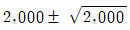
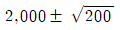
(정답률: 알수없음)
93. 다음 중 절대측정의 대상이 아닌 것은?
- 방사성물질의 방사능 결정
- 핵분열 당 방출되는 중성자수 측정
- 원자로의 한 지점에서 중성자 플럭스 측정
- GM계수기에서 플라토우 측정
(정답률: 알수없음)
94. 방사선이 인체에 미치는 영향에 대한 설명으로 틀린 것은?
- 결정적 영향은 증상의 특이성이 있고 심각도가 선량에 비례한다.
- 결정적 영향은 선량을 발단선량 이하로 유지하면 방지할 수 있다.
- 확률적 영향의 발생확률은 선량에 비례한다.
- 방사선 방호 목표는 사회적, 경제적 인자를 합리적으로 고려하여 확률적 영향을 방지함을 목적으로 한다.
(정답률: 알수없음)
95. 방사성핵종에 의한 내부피폭 과정에서 다음 각 핵종과 결정장기의 관계가 틀린 것은?
- Am : 결장
- Cs : 근육(전신)
- U : 신장
- Pu : 뼈
(정답률: 알수없음)
96. 방사선 피폭 시 인체 내 조혈기능 장해로 수개월 내 50%가 사망하는 선량(LD50)은?
- 0.75 ~ 1.5Gy
- 1 ~ 2Gy
- 3 ~ 5Gy
- 6 ~ 8Gy
(정답률: 알수없음)
97. 방사선 영향 관점에서 선량이 지극히 사소한 경우 규제 합리성 관점에서 대상 행위는 규제면제가 되는데 이 때 적용되는 개인선량과 집단선량의 기준은 각각 얼마인가?
- 1μSv/yr, 1man-Sv
- 10μSv/yr, 1man-Sv
- 20μSv/yr, 10man-Sv
- 50μSv/yr, 10man-Sv
(정답률: 알수없음)
98. 알파선 측정이 가능한 방사선 검출기로 연결된 것은?
- Nal(Tl)-HpGe
- CaAs-HgI2
- Zns(Ag)-CR39
- CdTe-LR115
(정답률: 알수없음)
99. 4.26R/hr의 선량률을 10mR/hr로 줄이려고 한다. 방사선의 평균에너지가 0.5MeV이고 차폐체의 질량에너지 흡수계수는 0.14cm2/gr, 밀도는 11.34gr/cm3이다. 이 때 필요한 차폐체의 최소 두께는? (단, 축적인자는 3이다.)
- 4.5cm
- 5.5cm
- 6.5cm
- 7.5cm
(정답률: 알수없음)
100. Co60의 1.33MeV 감마선에 대한 HPGe계측기에서의 반치폭(FWHM)은 1.2KeV이었다. 계측기의 분해능은 몇 %인가?
- 0.07%
- 0.09%
- 0.11%
- 0.13%
(정답률: 알수없음)